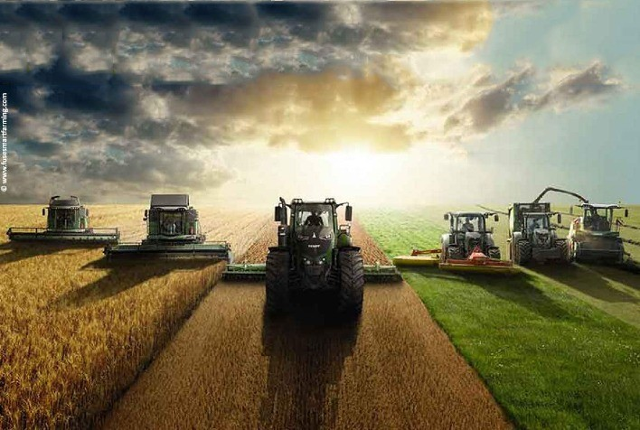

O Projeto Agrinho é uma iniciativa voltada para incentivar a ida do campo para a cidade e explicar suas vantagens...
-Feito por Gabriel Casagrande
aqueles com um plantio grande podem ir as cidades e fazer parcerias com mercados,vender a eles mercadorias e ficar com o lucro..
Também,a ida a cidade para conseguir novas tecnologias de conforto e desempenho para o campo..
muitos produtores perdem vantagens altissimas em nao ir a cidade,sendo que hoje,a melhor maneira de crescer seu negocio e dessa maneira
hoje,as tecnologias avançadas se tornam necessarias para o agro,e o uso delas melhora também a qualidade de vida do produtor rural
-Oportunidades Econômicas:Cidades frequentemente oferecem mais oportunidades de emprego em diferentes setores, atrativos para aqueles que buscam uma melhor qualidade de vida
-A urbanização pode facilitar o acesso a instituições de ensino de qualidade, contribuindo para a formação e capacitação dos indivíduos.
-As áreas urbanas têm maior acesso a tecnologias e internet, proporcionando melhores condições para trabalho remoto e aprendizado online
-A migração para a cidade pode também resultar em mudanças nas práticas agrícolas e na forma como a produção de alimentos é realizada
